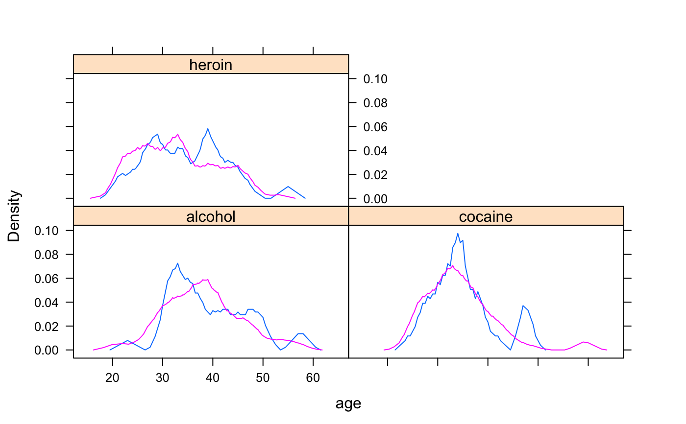

An ASH plot is the average over all histograms of a fixed bin width.
ashplot(x, data = data, ..., width = NULL, adjust = NULL, panel = panel.ashplot, prepanel = prepanel.default.ashplot) prepanel.default.ashplot(x, darg, groups = NULL, subscripts = TRUE, ...) panel.ashplot(x, darg = list(), plot.points = FALSE, ref = FALSE, groups = NULL, jitter.amount = 0.01 * diff(current.panel.limits()$ylim), type = "p", ..., identifier = "ash")
| x | A formula or numeric vector. |
|---|---|
| data | A data frame. |
| ... | Additional arguments passed to panel and prepanel functions or |
| width | The histogram bin width. |
| adjust | A numeric adjustment to |
| panel | A panel function. |
| prepanel | A prepanel function. |
| darg | a list of arguments for the function computing the ASH. |
| groups | as in other lattice plots |
| subscripts | as in other lattice prepanel functions |
| plot.points | One of |
| ref | a logical indicating whether a reference line should be displayed |
| jitter.amount | when |
| type | type argument used to plot points, if requested.
This is not expected to be useful, it is available mostly to protect a |
| identifier | A character string that is prepended to the names of i grobs that are created by this panel function. |
ashplot( ~age | substance, groups = sex, data = HELPrct)